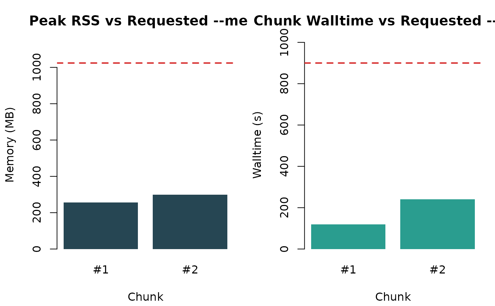

Plot a Post-Mortem SLURM Resource Efficiency Report
Source:R/efficiency.R
plot.slurmpilot_efficiency.RdVisualizes per-chunk observed Peak RSS against requested --mem and
per-chunk walltime against requested --time from a
slurm_efficiency_report() audit.
Examples
sa <- parse_sacct_output(
"100_1|COMPLETED|00:02:00|256M|0:0\n100_2|COMPLETED|00:04:00|300M|0:0"
)
res <- resource_spec(4L, 2L, mem_mb = 1024L, time_minutes = 15)
eff <- slurm_efficiency_report(sa, resources = res)
plot(eff, engine = "base")
